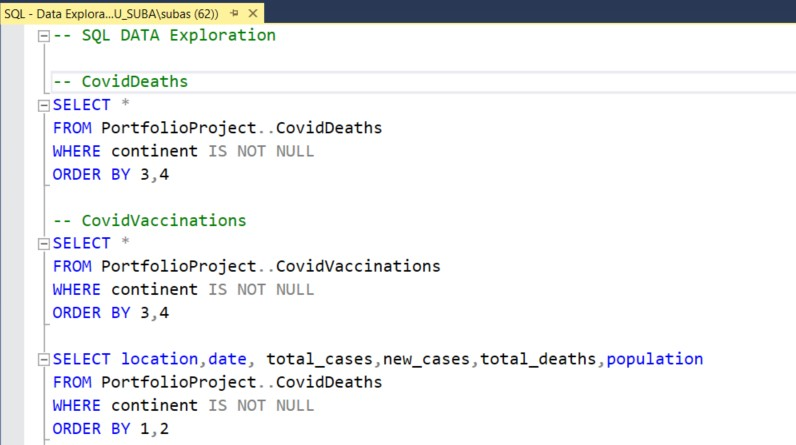
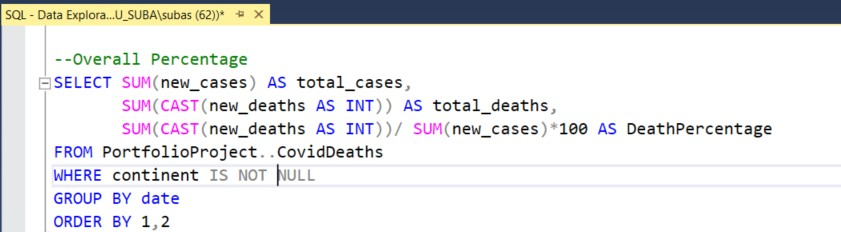
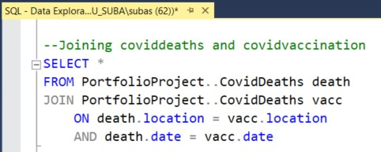

Data Exploration in SQL
This project involved SQL-based exploration of COVID-19 death rates and vaccination data to identify patterns and correlations between vaccination coverage and mortality. Using SQL queries, I analyzed regional trends, comparing death rates and vaccination.

